Collection inspector
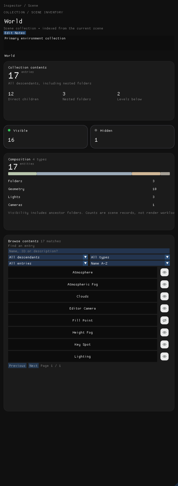
Executed CPU ImGui captures. Images are native C++ output, not HTML mockups.
AUTHORING ONLY; the gallery does not pretend they illuminate the scene.Exact collection hierarchy: heading and notes → trail → totals → visible/hidden status → composition → searchable, filterable, sortable manifest.

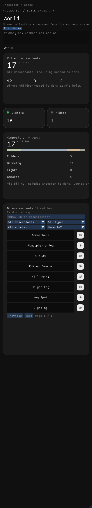
One C++ card system: Settings → Visibility → Medium with Beam → model technical peer → terminal Wind binding.
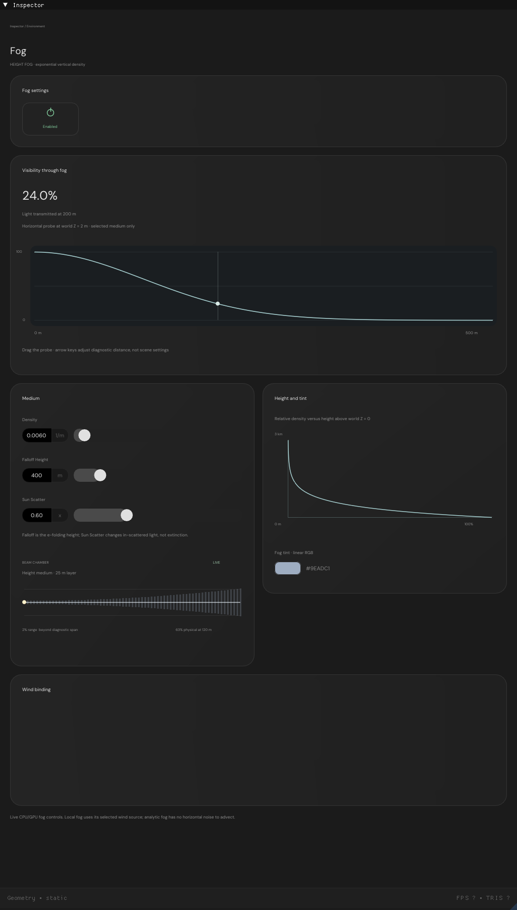
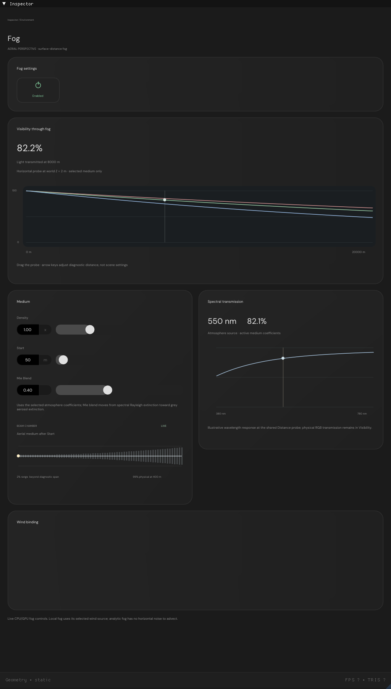
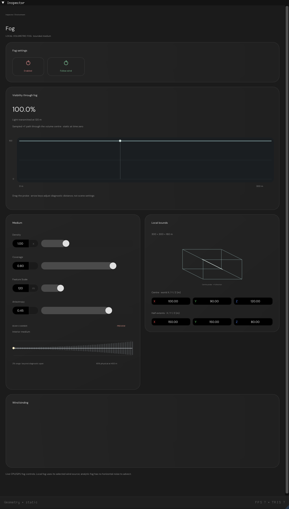
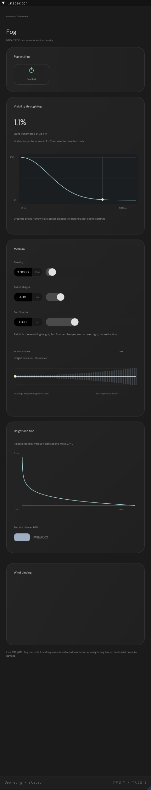
Composite and controls first; real image/export terminal.
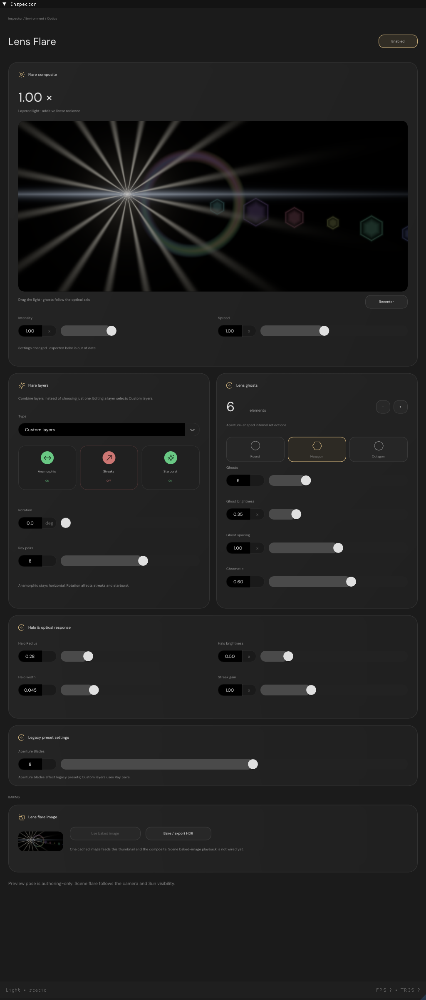
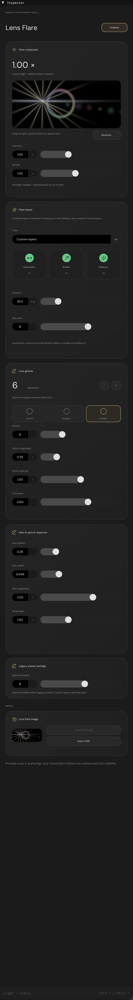
Lunar phase first, then settings/catalogue and retained native atlas/pose cards.
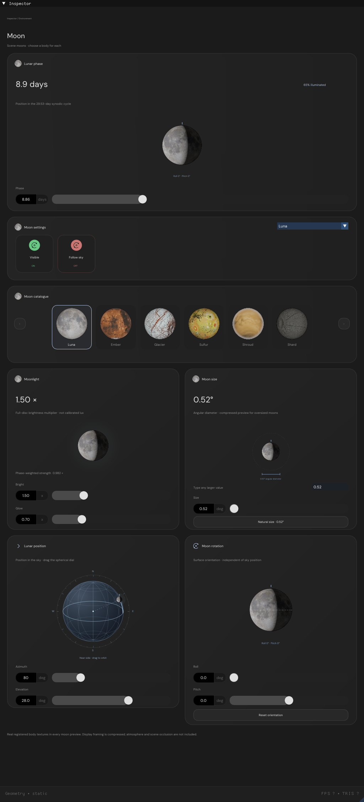
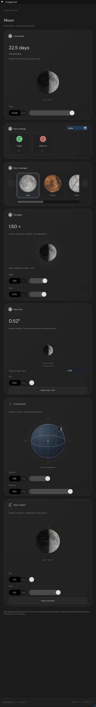
Real catalogue field first; quick settings, twinkle/rotation and bake-last follow.
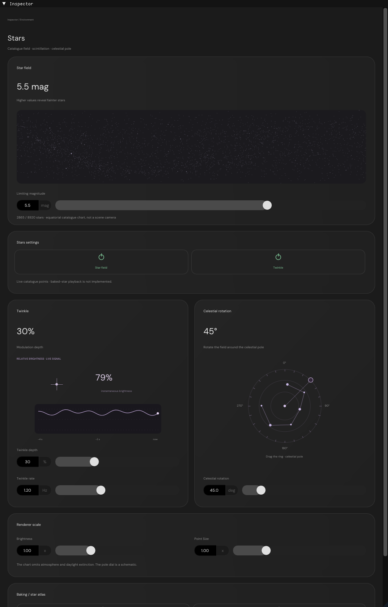
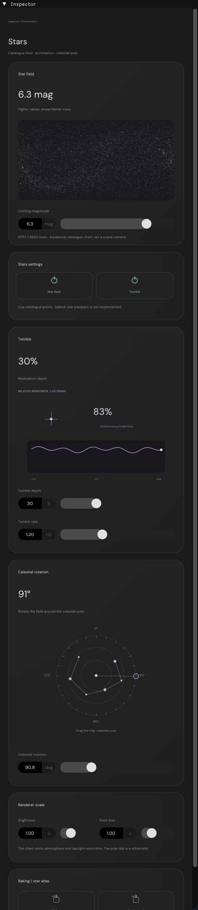
Shared summary/settings/coverage/deck hierarchy; Local retains real Centre/Half Size ownership.
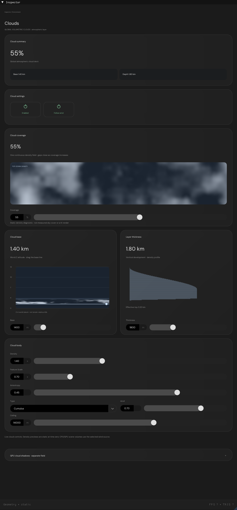
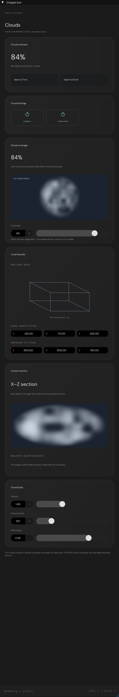
Anemometer → composite field → real controls/variation over the native WindField solver.
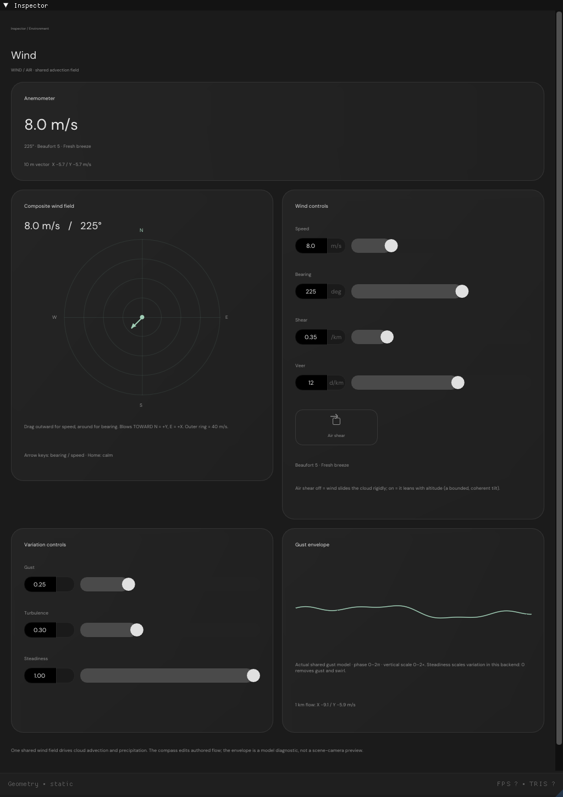
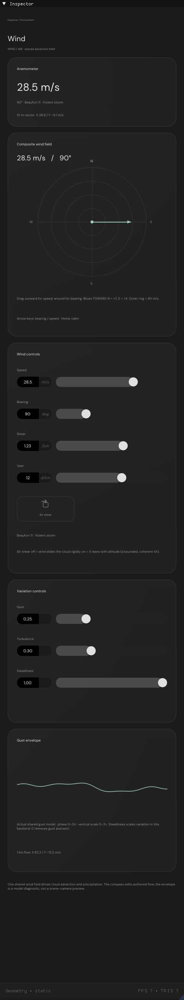
Type-first precipitation and preview-first Rainbow, retaining simulation telemetry and honest unavailable baking.
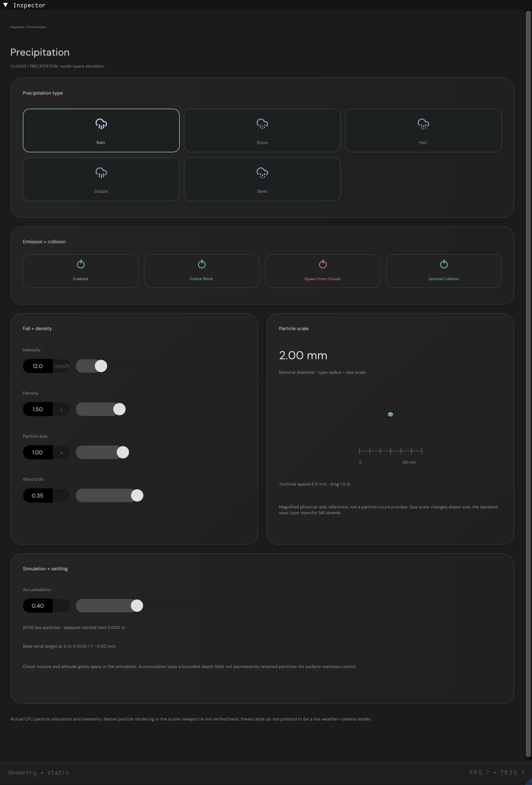
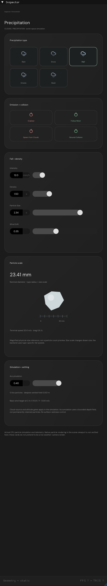
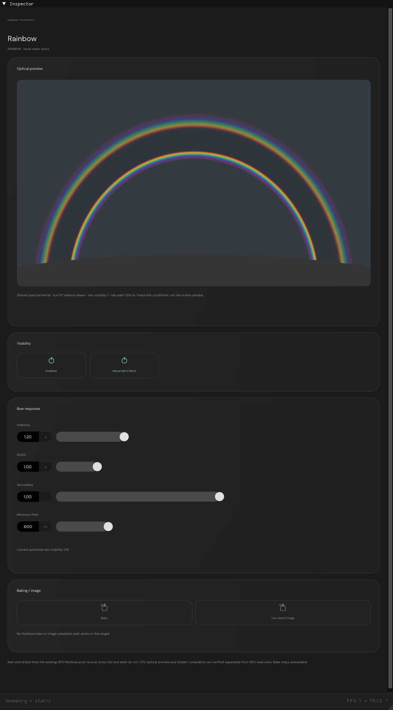
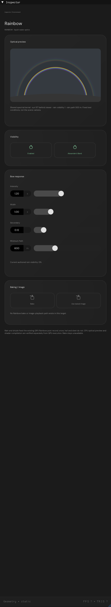
Shared component inspector. LED Strip now ports the accepted ribbon instrument, emitter ring, electrical metrics, per-metre output, layout/segments, transform and participation controls without a simplified placeholder drawing.
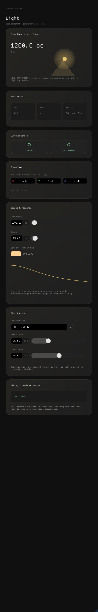
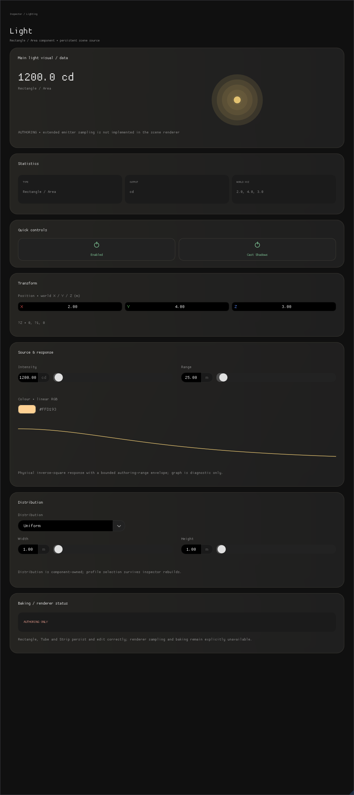
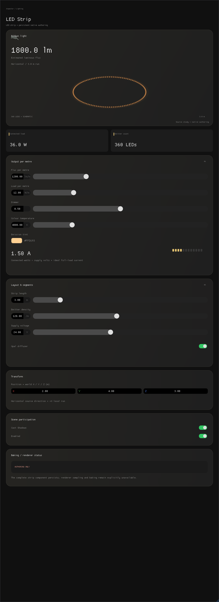
Dedicated native presentation over the real EV, saturation, contrast, bloom and vignette session properties; no invented histogram or renderer telemetry.
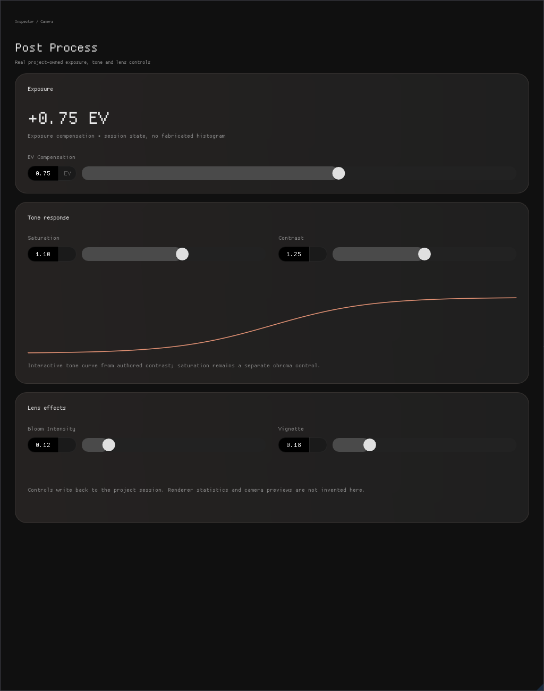
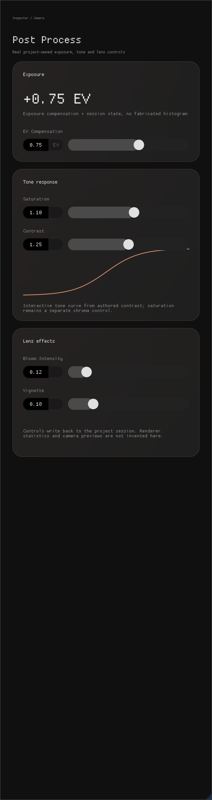